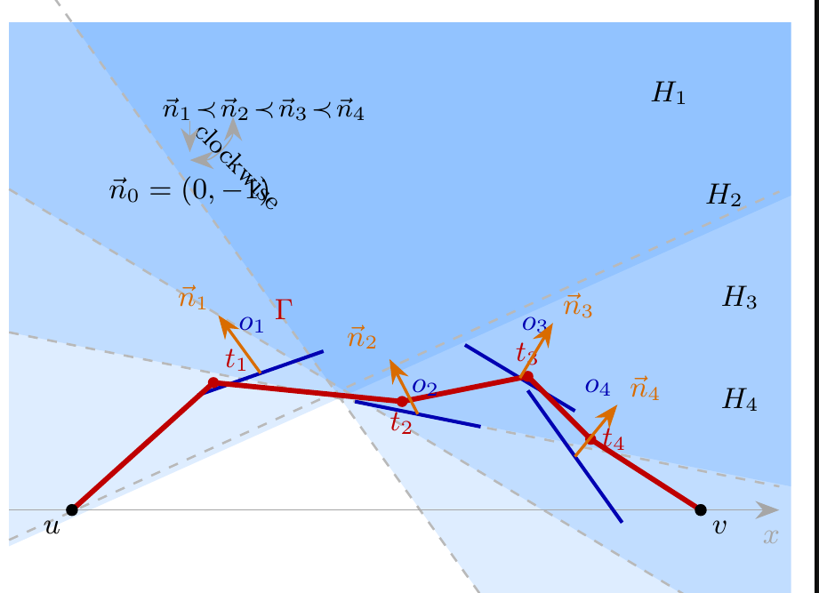
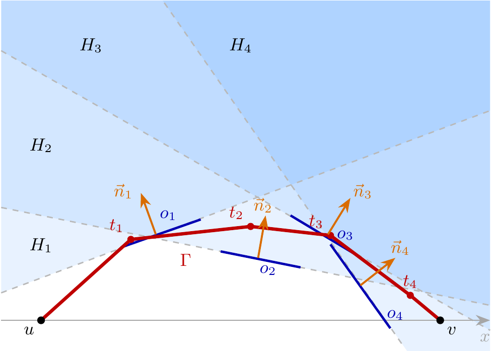

Programming Prompts
A first example is for generating code for Subroutine I.
- Prompt:
Write a function for Subroutine I based on this code. Explain the steps in details.
- Response:
Copilot gave a code that was not working. Indeed, the polygon was taking endpoints of the polygons, even though Subroutine I is supposed to return
a polygon having no such vertices.
- Prompt:
The code does not seem to work. The polygon is taking endpoints of segments, even though it is not supposed to.
- Response:
Copilot could not find the reason its code for Subroutine I was not working correctly. We manually debugged the code and found the mistake, enabling us
to correct the code given by Copilot (which was mostly correct), and continue the project.
A second example is for adding features, that are not complicated to add per se, but could take a lot of time. We first had a code that was placing random
segments and then computing the polygon for this random set. We thought that it would be more interesting to allow the user to directly draw the segments
and then compute the polygon on this user-chosen set.
- Prompt:
Change this code so that the user can place segments himself.
- Response:
Copilot wrote different code snippets, and told where to place them in the existing code. Once it was placed, the code worked directly, saving us
quite some time.
Tikz Figure Prompts
Being not familiar with the Tikz package on latex, we used Euria to generate latex figures of a given statement.
- Prompt:
Make a tikz picture for this statement : Can you make a tikz figure for this statement :
To use this, we put the two anchor points u and v on the x-axis and turn each segment oi into a half-plane Hi. We then sort these half-planes clockwise according to their outward normal vectors, starting from (0, -1). Because the chain we are looking for is convex, any upper path from u to v that visits all Hi has to visit them in this sorted order (Lemma 22). Also, if the real optimal chain Γ does not touch any segment endpoints (except maybe u and v), it must be the exact same path as the TPP solution ΓH. Otherwise, mixing the two with λΓ + (1 - λ)ΓH would give an even shorter valid chain (Lemma 24). The only catch is that half-planes are infinite, so a TPP path might hit a half-plane without actually touching the original finite segment. We always have to check afterwards that all segments are really intersected.
- Response:
Euria gave a latex snippet that, once compiled, gave a correct idea of the statement, but overall was incorrect. See the next image.

The tikz code being self explanatory, it was easy to correct this figure by ourselves, by changing directly the latex code, and recompiling the image. We obtained this result.

Note that the same methodology was used to generate the figures in the pdf report.